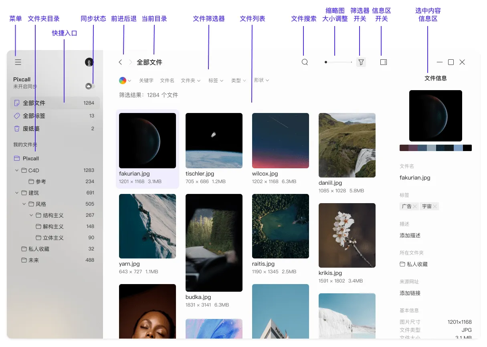
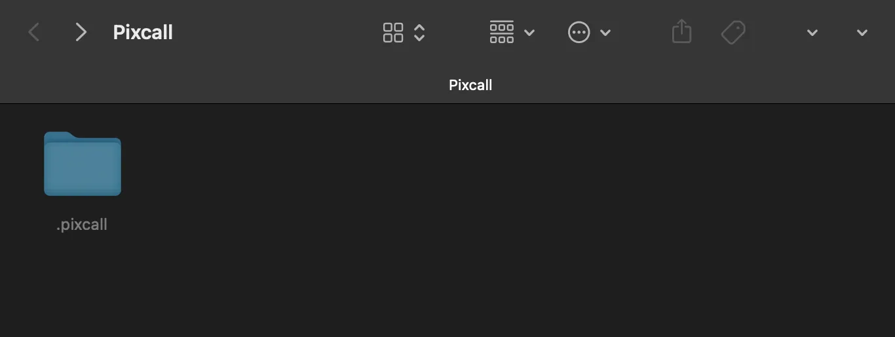

Pixcall 用了半年——从 Eagle 替代到主力素材库，聊聊这半年的真实感受
装 Pixcall 到现在正好半年多，从 0.8 版本一路用到现在的正式版。当初只是想找 Eagle 的便宜替代，没想到慢慢变成了每天必开的软件。这篇聊聊哪些地方越用越顺手，哪些坑是时间长了才暴露的，以及为什么我最终没换回 Eagle。
当初为什么装它
说实话一开始动机挺单纯的——Eagle 的终身授权涨价了，想找个能替代的素材管理器试手。Pixcall 那时候还在测试阶段，Pixcall官网说"不导入文件、文件夹直接当资源库"，我觉得这个想法挺有意思的，就从官方下载拿了一份装上了。没想到一用就没再换回去。

越用越顺手的，是那个当初觉得"奇怪"的设计
刚用 Pixcall 的时候最不适应的一点，就是它没有"导入"这个动作。在 Eagle、Bridge 这些软件里，你得把文件拖进软件、等它生成缩略图、整理到自己的目录结构里——整个过程像是在"喂"软件吃东西。Pixcall 不一样，它要求你先指定一个本地文件夹当资源库，然后这个文件夹本身就是资源库。文件夹里有什么，Pixcall 里就显示什么；你在资源管理器里改了文件名，Pixcall 里自动跟着变。
一开始觉得这设计太"糙"了——这不就是加了个缩略图浏览的文件夹吗？但用了半年之后，我才发现这才是真正的省心。上个月我需要把资源库整个搬到新电脑上，其他软件可能要导出、再导入、还要担心缩略图重建要多久，Pixcall 我就是把文件夹拷到移动硬盘、插到新电脑、打开 Pixcall 选"打开已有资源库"——完事，标签、颜色、收藏全部原样保留，连我之前在旧电脑上打了一半的标签分组都没丢。
那个藏在资源库根目录下的 .pixcall 文件夹，就是 Pixcall 做的全部"增强"工作。缩略图、标签、描述、来源网址、评级这些元信息全存在里面，原始文件一个字节都不会被改动。这个设计让我对数据的安全感拉满了——哪怕哪天 Pixcall 倒闭了、我不想用了，删掉 .pixcall 文件夹就行，文件干干净净留在原地，没有任何"导出"流程要走。

越用越烦的，是那些当初没注意到的同步边界
说个反直觉的：我当初注册账号、开启云同步，就是冲着"多设备实时同步"来的。结果用了三个月之后发现，Pixcall 的同步远没有我想的那么"实时"。
最明显的坑是 NAS 网络存储和外置设备。Pixcall 通过操作系统的文件监控 API 来感知磁盘变化，但这个机制只对本地 SSD/HDD 实时生效。如果资源库放在 NAS 上，或者放在 U 盘/移动硬盘里，Pixcall 只能在启动时扫码一次——之后你在资源管理器里改了什么，Pixcall 客户端不会自动更新，得手动触发重建索引。我之前把一部分归档素材放在 NAS 上，每周往里面加几个文件，结果 Pixcall 里看不到，以为是软件坏了，折腾了好一阵才搞清楚是设计如此。
还有个更隐蔽的问题：外置设备换盘符。Pixcall 识别资源库文件夹靠的是路径，如果你在电脑 A 上插 U 盘是 E 盘，到电脑 B 上变成了 F 盘，Pixcall 就认不出同一个资源库了。它会提示你"资源库位置已移动"，得手动重新定位。这个问题我在临时用公司电脑的时候踩过一次，来回折腾了十分钟。
每天离不开的三个功能
用了半年之后，Pixcall 里有几个功能已经成了我每天必用的：
颜色索引打标。给文件按项目、状态、优先级打颜色标记，比纯文字标签直观得多。我现在的工作流是：红色 = 紧急交付中，橙色 = 本周要改，绿色 = 已完成归档，蓝色 = 灵感素材池。每天早上打开 Pixcall，扫一眼红色和橙色就知道今天要干什么了。
智能聚合搜索。Pixcall 可以同时在多个资源库里搜——我有三个本地资源库（分别存设计稿、参考素材、老项目归档），以前找一个东西得挨个开，现在用聚合搜索一次搞定。
同步类型精细化控制。这个是用了云同步一段时间之后才发现好用的——Pixcall 允许你给每个文件夹单独设同步类型，具体怎么配可以去pixcall文档查一下。我把 2024 年以前的旧项目全部设成了"仅云端"，文件从本地磁盘删掉但云端保留，偶尔需要参考的时候双击预览，Pixcall 自动从云端拉临时副本，用完就删。这样本地磁盘空间释放了好几十 G，但那些资料依然能随时访问。私密素材文件夹我则设成了"仅本地"，不上传云端，移动端和网页端都看不到——这一点对有不适合公开的素材的人来说非常重要。
半年下来观感的修正
当初装 Pixcall 的时候，我以为"不导入文件"只是个简化步骤的小卖点——说白了就是省了个导入按钮嘛。但半年之后我才意识到，这其实是 Pixcall 最核心的哲学：数据所有权在你手里。我之前用 Eagle 的时候，有一次重装系统忘记备份 Eagle 的数据库文件夹，结果三年的标签和分类全部丢失——文件倒是都在，但重新分类整理花了我整整一个周末。Pixcall 不存在这个问题，因为它根本不"拥有"你的文件，它只是给你的文件夹加了一层索引。
另一个当初高估的是云同步的便利性。我当初满心期待多设备无缝衔接，实际用下来发现，2GB 的免费云端空间对于素材管理来说其实挺紧张的——一个高清 PSD 就是几十 MB，2GB 很快就满了。空间满了之后桌面端还能继续加文件，只是新文件不会同步到云端，移动端和网页端暂时看不到。但我最终也没升级高级会员，因为发现大部分素材其实用"仅云端"和"仅本地"的组合就能把免费空间用到极致。
会不会卸载？什么信号出现就该换了
目前的状态：不会卸载。Pixcall 已经成了我每天必开的软件，颜色索引、聚合搜索、文件夹一一对应这几个点，在我试过的其他素材管理器里要么没有要么做得不好。但有几个信号出现的话，我会认真考虑换工具：
第一，如果 Pixcall 哪天开始强制账号登录、本地资源库也需要绑定账号才能用——那就违背了它最核心的设计哲学。
第二，如果 .pixcall 系统文件夹损坏的频率变得很高——目前半年只遇到过一次，是因为我用 OneDrive 同步资源库文件夹导致的（OneDrive 在传输大量小文件时可能不完整）。官方也特意警告了这个风险，但如果未来 Pixcall 的索引稳定性下降，这会是致命问题。
第三，如果出现一个同样不导入、同样文件夹一一对应，但同步做得更好的替代品——尤其是 NAS 实时同步和外置设备盘符自动适配这两点。
写这篇的时候我刚给一个新的设计项目建好了 Pixcall 子文件夹，打了第一轮颜色标记，标签分组也设好了。从 Eagle 换到 Pixcall，用了半年，我觉得值。对了，当初翻资料的时候发现这套 Pixcall 的中文文档在 GitHub、Gitee、GitCode 三个仓库都有备份，国内访问慢的话换个源就行。